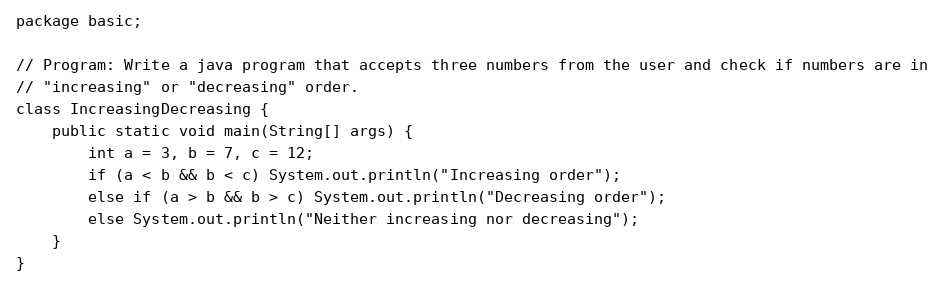
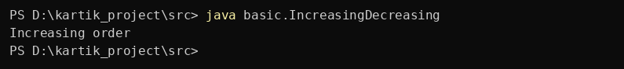

Question 66
Write a java program that accepts three numbers from the user and check if numbers are in “increasing” or “decreasing” order.
Program


Program screenshot not found. Keep the program folder next to this website folder.
Output


Output screenshot not found. Keep the output folder next to this website folder.